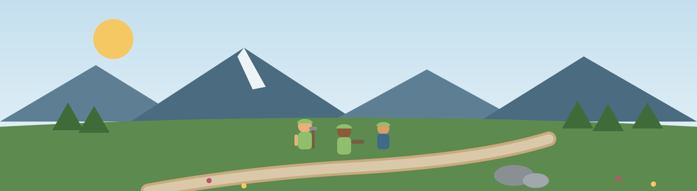

2026 Junior Ranger Program Application
Application Closed
Called "Add Impact" on GivePulse: record hours you have already served.
About
Junior Rangers complete trail maintenance, forestry, and invasive plant management projects across Boulder's Open Space & Mountain Parks. Crews work outdoors in all weather, led by experienced rangers.
Before registering, please make sure you have submitted your application on the City of Boulder career portal.
Physical Ability Required
This internship involves outdoor physical work. Participants should be able to perform the following, with or without reasonable accommodation:
- Bending and squatting for trail and vegetation work
- Lifting and carrying tools and materials up to 30 lbs
- Walking on uneven terrain for up to 4 hours
- Ability to use eyesight to perceive detailed differences (plant identification)
If you need an accommodation to participate, contact the program coordinator using the contact panel on this page.
Requirements
- Applicants must be at least 14 and not more than 17 years old by May 1, 2026.
- Applications must be submitted through the City of Boulder career portal.
Details
- Created for
- City of Boulder
- Paid
- Yes
- Timeframe
- June – August 2026
- Credit
- Not offered
- Supervisor
- Open Space & Mountain Parks staff
- Hiring Manager
- Sarah Hosey